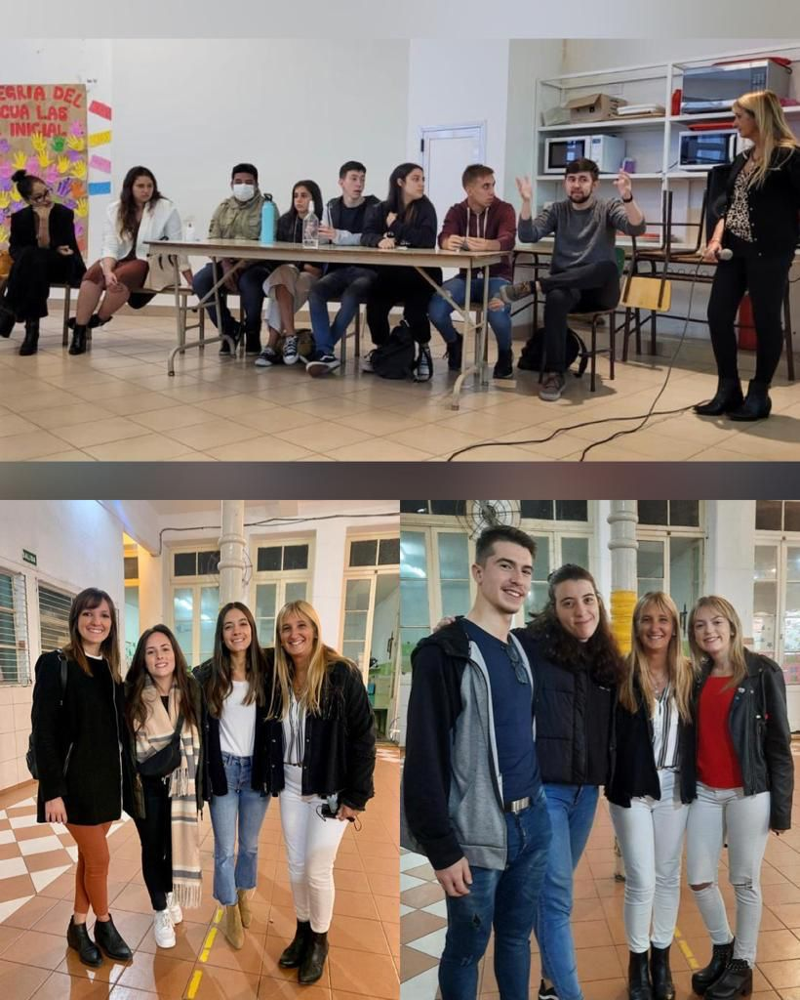

VISITA DE EGRESADOS
Por: Leila Cari Belizán (5°B)
En abril, tuvimos la visita de egresados del colegio en diferentes años. Compartieron una charla interactiva con los alumnos de 5to año.
El objetivo de la misma era que, ante las inseguridades, dudas, preguntas y miedos, los alumnos de 5to año pudieran conocer las experiencias de alumnos actuales en diversas universidades y con gran variedad de carreras.
Entre los invitados había muchas experiencias, tanto laborales como en el ámbito universitario y ambos a la vez. Nos compartieron muchas anécdotas. Hubo un espacio de preguntas, en el que pudimos interactuar más a profundidad.
Tuvimos dos encuentros. En el primero, conocimos acerca de la vida de estudiantes actuales de carreras de grados. Y en el segundo, pudimos conocer a personas ya egresadas, con su título conquistado.
Invitados: Clara Moline 2019, Gabriel Rodriguez 2019, Maia Varano 2018, Esteban Pomar 2018, Agustín Scuderi 2018, Guillermo Risko 2018, Fátima Leiró 2017, Tomas de Arteche 2017, Aldana Castillo 2015, Guadalupe Dadamio 2014, Agustina de Ávila Cunha 2009, Macarena Coronado 2007 y Juana Fernández Reguera 2007.
